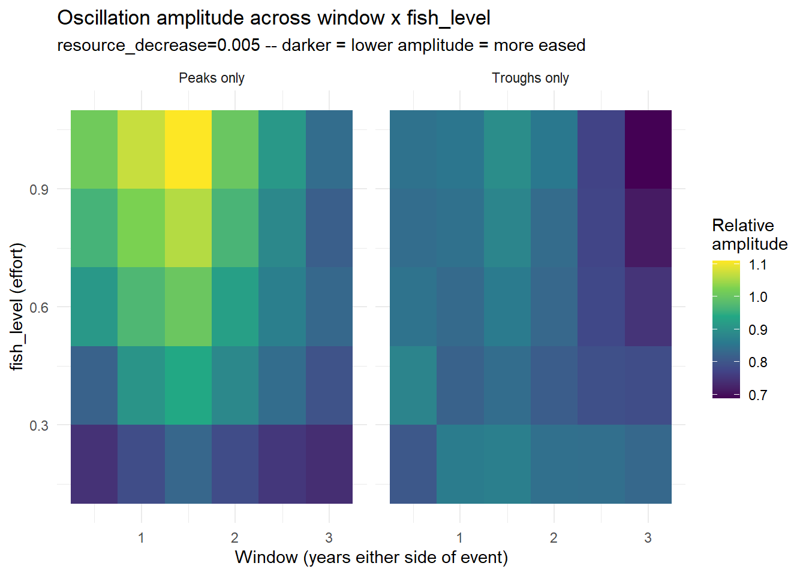
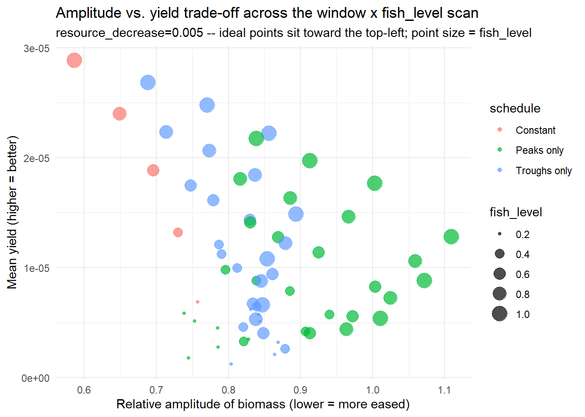
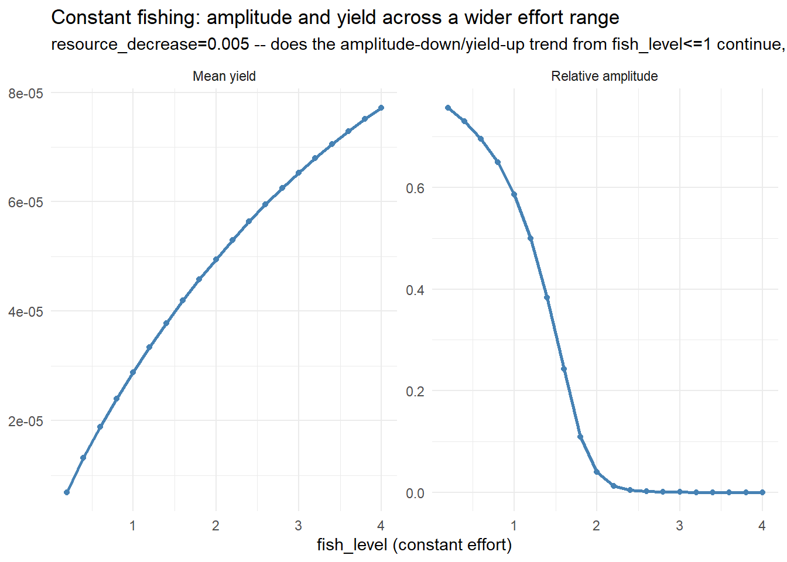
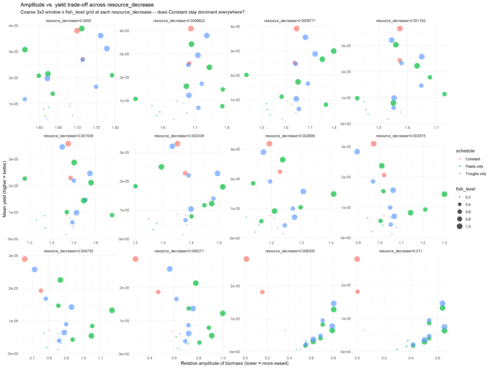
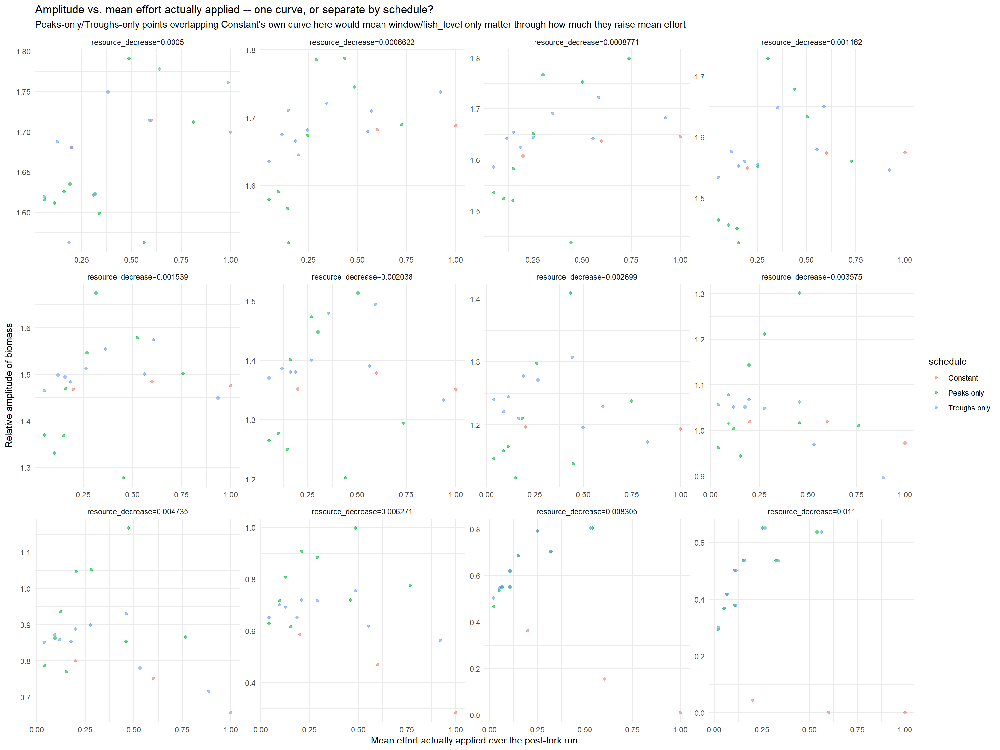
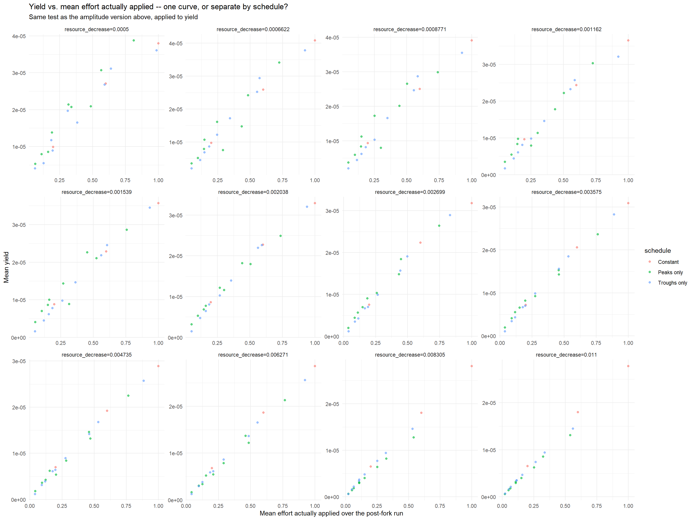

Day 34: Recreating the Anchovy Oscillation, and Does Fishing Actually Ease It?
research
mizer
anchovy
bifurcation-diagram
fishing-schedule
blog
Recreates a genuine anchovy limit cycle, then asks whether fishing eases it. Constant effort turns out to dominate everything tested (including a second, effort-side bifurcation that collapses the oscillation outright) but a mean-effort diagnostic built to explain an odd arc in the results reveals why: yield only cares how much you fish, amplitude cares when.
Author
Samia
Published
July 23, 2026
Where Day 33 Left Us
Six levers thrown at cod’s calibration all came back flat. There was no genuine limit cycle anywhere, most likely because cod’s own parameterisation doesn’t sit near an oscillatory regime at all. Day 33 queued up going back to the anchovy parameterisation that did oscillate earlier in this project, as a sanity check on the sweep machinery itself. It grew into a bigger question: given a real oscillation, does fishing actually ease it, or just move it around?
Recreating the Oscillation
Reusing Day 18/20’s own anchovy setup below, then sweeping resource_decrease directly with the same forward/backward, max/min bifurcation convention every cod sweep since Day 30 has used (40 points, log-spaced 0.0001-0.5, tr_bdf2, warm-started):
The actual sweep: forward and backward passes across resource_decrease, warm-started (every point after the first inherits the previous point’s own final (n, n_pp) state), recording max and min biomass separately in a late window rather than collapsing straight to a single amplitude number. Branches that fan apart mean a real limit cycle, branches that collapse onto one curve mean a fixed point.
A real, sharp bifurcation around resource_decrease ≈ 0.012-0.015: Below it, forward/backward branches fan apart into genuine oscillation (rel_amplitude up to ~1.7); above it, rel_amplitude collapses to numerical noise and stays there to 0.5. Confirms the sweep machinery that read flat six times against cod actually detects a real cycle when one exists.
Biomass is pinned at exactly 0.0869 across the entire non-oscillating half of the range:resource_decrease only scales the resource’s replenishment rate, not its capacity, so past some rate the resource just sits at capacity regardless.
Fishing Only at Peaks vs. Only at Troughs
The project’s central question, applied to a genuine limit cycle for the first time: does fishing relieve the “jam,” or worsen it, depending on when in the cycle it happens?
One real bug caught along the way: the first version forked into peaks-only/troughs-only/constant branches at t = 300, but the oscillation doesn’t actually settle into a regular cycle until roughly t = 400, so that both the detected events and the state every branch continued from were contaminated by a still-settling transient. Fixed by pushing the fork out to t = 500.
Settle-and-kick recipe reused unchanged from Day 18/20 (10yr unfished settle, then a 1000x knock-down of the mature w range at t = 10, then run forward), then a fork at t = t_fork that peaks/troughs are detected off of, followed by peaks-only/troughs-only/constant branches all sharing that same pre-fork state:
# A tibble: 4 × 4
schedule max_biomass min_biomass rel_amplitude
<chr> <dbl> <dbl> <dbl>
1 Constant 0.105 0.0498 0.714
2 Peaks only 0.111 0.0460 0.831
3 Troughs only 0.110 0.0501 0.749
4 Unfished reference 0.112 0.0493 0.779
Against a real baseline (the unfished reference, rel_amplitude = 0.779), at resource_decrease = 0.005:
Schedule
rel_amplitude
vs. unfished
Constant
0.714
eases it, -8.3%
Troughs only
0.749
eases it slightly, -3.9%
Peaks only
0.831
worsens it, +6.7%
A 6x5 window/fish_level scan settled it further. The settle-and-detect step (expensive, independent of window/fish_level) runs once; only the post-fork branches repeat per grid point, and mean_effort, the time-averaged effort actually applied, whatever its timing, is recorded per point for later use:
window_seq <-seq(0.5, 3, by =0.5)fish_level_seq <-seq(0.2, 1, by =0.2)scan_df <-run_window_effort_scan( rd_focus, fish_level_seq = fish_level_seq, window_seq = window_seq,t_fork = t_fork, scan_post_fork_years =100, scan_summary_window =30)# Best available combinations: event-triggered points at or below Constant's# own median amplitude, ranked by yield.constant_scan_df <- scan_df %>%filter(schedule =="Constant")constant_median_amplitude <-median(constant_scan_df$rel_amplitude)event_scan_df <- scan_df %>%filter(schedule !="Constant")amplitude_heatmap <-ggplot(event_scan_df, aes(x = window, y = fish_level, fill = rel_amplitude)) +geom_tile() +facet_wrap(~schedule) +scale_fill_viridis_c() +labs(x ="Window (years either side of event)", y ="fish_level (effort)",fill ="Relative\namplitude",title ="Oscillation amplitude across window x fish_level",subtitle =sprintf("resource_decrease=%.4g -- darker = lower amplitude = more eased", rd_focus)) +theme_minimal()amplitude_heatmap

Code
tradeoff_plot <-ggplot(scan_df, aes(x = rel_amplitude, y = mean_yield, color = schedule, size = fish_level)) +geom_point(alpha =0.7) +labs(x ="Relative amplitude of biomass (lower = more eased)",y ="Mean yield (higher = better)",title ="Amplitude vs. yield trade-off across the window x fish_level scan",subtitle =sprintf("resource_decrease=%.4g -- ideal points sit toward the top-left; point size = fish_level", rd_focus)) +theme_minimal()tradeoff_plot

Constant dominates outright, improving on both amplitude and yield together with no trade-off. Peaks-only has a genuine resonance-like hot spot (moderate window + high effort actively pumps the cycle, worse than not fishing at all); Troughs-only never does this, but still never beats Constant.
Pushing Constant Effort Further
Constant was still improving on both axes at the top of the range tested (fish_level = 1). Extending the constant-effort scan out to fish_level = 4 (same settle recipe, schedules = "Constant" so it skips peak/trough detection entirely) finds something new:
Code
fish_level_seq_constant_ext <-seq(0.2, 4, by =0.2)constant_ext_df <-run_window_effort_scan( rd_focus, fish_level_seq = fish_level_seq_constant_ext,t_fork = t_fork, scan_post_fork_years =100, scan_summary_window =30,schedules ="Constant")constant_ext_long <-bind_rows(data.frame(fish_level = constant_ext_df$fish_level, value = constant_ext_df$rel_amplitude, metric ="Relative amplitude"),data.frame(fish_level = constant_ext_df$fish_level, value = constant_ext_df$mean_yield, metric ="Mean yield"))constant_ext_plot <-ggplot(constant_ext_long, aes(x = fish_level, y = value)) +geom_line(linewidth =1, color ="steelblue") +geom_point(size =1.5, color ="steelblue") +facet_wrap(~metric, scales ="free_y") +labs(x ="fish_level (constant effort)", y =NULL,title ="Constant fishing: amplitude and yield across a wider effort range",subtitle =sprintf("resource_decrease=%.4g -- does the amplitude-down/yield-up trend from fish_level<=1 continue, plateau, or reverse?", rd_focus)) +theme_minimal()constant_ext_plot

NoteA second bifurcation, on the effort axis this time
Amplitude doesn’t just ease gradually, it collapses: 0.76 at fish_level=0.2 down through a steep fall between 1.2 and 2.2, to essentially zero by 2.2 and flat there to 4.0. Sufficiently hard constant fishing doesn’t just dampen the cycle - it appears to eliminate it outright, pushing the population back to a fixed point from the effort side, mirroring Section 1’s own resource-side bifurcation.
Yield, meanwhile, keeps climbing the entire way to fish_level=4 (8x baseline) with no turnover. The shape is concave, diminishing returns visibly setting in, but no peak found in this range.
Does the Pattern Hold Across resource_decrease? (And a Correction)
A densified scan (12 resource_decrease values, log-spaced 0.0005-0.011, coarse 3x3 window/effort grid at each) pins the amplitude crossover precisely: resource_decrease = 0.00357 to 0.00473. Below that, event-triggered fishing has some foothold on amplitude; above it, Constant wins outright everywhere.
Code
rd_scan_seq <-exp(seq(log(0.0005), log(0.011), length.out =12))window_seq_coarse <-c(0.5, 1.5, 3)fish_level_seq_coarse <-c(0.2, 0.6, 1)rd_scan_df <-bind_rows(lapply(rd_scan_seq, function(rd) {run_window_effort_scan( rd, fish_level_seq = fish_level_seq_coarse, window_seq = window_seq_coarse,t_fork = t_fork, scan_post_fork_years =100, scan_summary_window =30 )}))rd_scan_tradeoff_plot <-ggplot(rd_scan_df, aes(x = rel_amplitude, y = mean_yield, color = schedule, size = fish_level)) +geom_point(alpha =0.7) +facet_wrap(~sprintf("resource_decrease=%.4g", resource_decrease), scales ="free", ncol =4) +labs(x ="Relative amplitude of biomass (lower = more eased)",y ="Mean yield (higher = better)",title ="Amplitude vs. yield trade-off across resource_decrease",subtitle ="Coarse 3x3 window x fish_level grid at each resource_decrease -- does Constant stay dominant everywhere?") +theme_minimal()rd_scan_tradeoff_plot

Code
# The direct generalisation check: for each resource_decrease, does ANY# event-triggered point beat Constant's own best on amplitude, and separately# on yield?rd_scan_verdict <- rd_scan_df %>%group_by(resource_decrease) %>%summarise(constant_best_amplitude =min(rel_amplitude[schedule =="Constant"]),constant_best_yield =max(mean_yield[schedule =="Constant"]),any_event_beats_constant_amplitude =any(rel_amplitude[schedule !="Constant"] < constant_best_amplitude),any_event_beats_constant_yield =any(mean_yield[schedule !="Constant"] > constant_best_yield),.groups ="drop" )rd_scan_verdict
The interesting part is what happened when the two amplitude “wins” at the bottom of that range got rechecked with Section 3’s own longer, more careful settle (post_fork_years=300 vs. the scan’s 100) instead of trusted at face value:
NoteThe coarse scan wasn’t just imprecise - it was wrong about which schedule wins
At resource_decrease = 0.001: Peaks-only still beats Constant (1.584 vs. 1.610). But the unfished reference is 1.542, lower than both. Neither fished schedule actually eases anything here; Constant is worse by 4.4%, Peaks-only “only” 2.7%. Peaks-only isn’t easing the oscillation, it’s just losing least.
At resource_decrease = 0.0025: the coarse scan flagged Peaks-only as the winner. Under the careful methodology, Troughs-only wins instead (1.182 vs. Peaks-only’s 1.211 and Constant’s 1.275), and both beat the unfished baseline here. The short scan didn’t just get the margin wrong, it named the wrong schedule.
Lesson: the amplitude-beats-Constant phenomenon below resource_decrease ≈ 0.004 is real, but a coarse scan can’t be trusted to say which strategy is responsible for it, only that something is going on worth rechecking properly.
The Circle in the Trade-off Plot
The amplitude-vs-yield scatter, faceted across all twelve resource_decrease values, had a visible structure: points tracing an arc rather than scattering randomly, suggestive of one hidden variable driving both axes rather than window and fish_level acting independently. mean_effort, the time-averaged effort actually applied, however it’s distributed in time, already recorded per point by run_window_effort_scan() above, is the natural thing to test that against: plot rel_amplitude and mean_yield each directly against mean_effort, faceted by resource_decrease, colored by schedule, instead of against each other.
Code
mean_effort_amplitude_plot <-ggplot(rd_scan_df, aes(x = mean_effort, y = rel_amplitude, color = schedule)) +geom_point(alpha =0.6) +facet_wrap(~sprintf("resource_decrease=%.4g", resource_decrease), ncol =4, scales ="free") +labs(x ="Mean effort actually applied over the post-fork run",y ="Relative amplitude of biomass",title ="Amplitude vs. mean effort actually applied -- one curve, or separate by schedule?",subtitle ="Peaks-only/Troughs-only points overlapping Constant's own curve here would mean window/fish_level only matter through how much they raise mean effort") +theme_minimal()mean_effort_amplitude_plot

Code
mean_effort_yield_plot <-ggplot(rd_scan_df, aes(x = mean_effort, y = mean_yield, color = schedule)) +geom_point(alpha =0.6) +facet_wrap(~sprintf("resource_decrease=%.4g", resource_decrease), ncol =4, scales ="free") +labs(x ="Mean effort actually applied over the post-fork run",y ="Mean yield",title ="Yield vs. mean effort actually applied -- one curve, or separate by schedule?",subtitle ="Same test as the amplitude version above, applied to yield") +theme_minimal()mean_effort_yield_plot

NoteYield collapses onto one curve. Amplitude does not.
Yield: Constant, Peaks-only, and Troughs-only all sit on the same tight, near-linear curve against mean_effort, in every panel. Total catch is essentially indifferent to when the effort lands but cares only about how much of it there is on average.
Amplitude: no such collapse. At low resource_decrease there’s real scatter (window’s specific value matters, not just its average effort). At higher resource_decrease, the separation is stark: Constant sits on a visibly lower curve than either event-triggered schedule, for the same or even less average effort.
That resolves the circle: yield is pinned to a single curve in one variable, while amplitude depends on two - effort and timing. Varying window and fish_level slides points along yield’s fixed backbone while fanning them out vertically in amplitude by schedule, which is exactly the “one axis pinned, one forking” shape that reads as an arc.
It also sharpens the whole day into one sentence: fishing’s effect on yield is timing-indifferent (you get what your average effort buys you) but its effect on easing the oscillation is not, and spreading effort evenly beats concentrating it in bursts by a widening margin the closer the system sits to its own bifurcation boundary.
What’s Next
Rerun the resource_decrease = 0.0005, Peaks-only yield “win” through Section 3’s careful methodology (t_fork = 500, post_fork_years = 300, summary_window = 50) before trusting it. The two amplitude wins that got this same recheck both flipped or lost their margin, and this yield claim has had no recheck at all yet, so it’s next in line, not a nice-to-have.
Load the calibrated cod params and rerun the mean_effort diagnostic (Section 4d’s two plots) against it. If yield still collapses onto one curve regardless of schedule there too, that’s a general mizer result worth stating as one; if it doesn’t, that’s just as informative, since it would mean anchovy’s collapse was a feature of this particular calibration and not fishing dynamics in general.
Extend the constant-effort scan past fish_level = 4, in fish_level steps of 1 up to at least 8, and check specifically whether yield actually turns over or keeps climbing indefinitely, since the current data only shows it still climbing at the edge of the range tested.